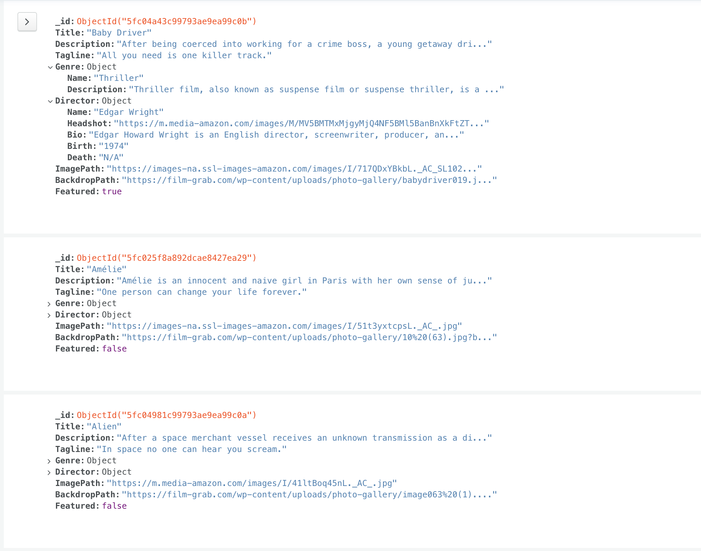

Case Study for Full-Stack Demonstration Project: CineFan
Overview

CineFan is a web app which I developed using the MERN stack. It provides registered users with an array of movies and access to information about their directors, genres, and a brief description. Users must register in order to access this content. Once they have done so, users can update their own personal information and create a list of favourite movies to be stored in their account.
Context
I created CineFan as part of my training in full-stack web development with CareerFoundry. This project was specifically part of the Client-Side Programming & React module.
Objective
The purpose of this project was to hone and ultimately demonstrate my skill with both front- and back-end development. The goal was to create a complete server-side and client-side application from scratch.
On a personal level, I wanted to build something with a simple yet striking visual style, which could be used to easily find information about some of my favourite movies. Most people are familiar with IMDB, but I wanted to make a simpler, more curated version of that concept with a greater emphasis on style and appearance.
The Build Process
Back-End
The server-side consists of a REST API, built using Node.js and Express. This interacts with MongoDB, a non-relational database. The API is accessed via HTTP methods, such as GET and POST, in order to keep interactions with it straightforward. These follow a CRUD method to update, retrieve, and store data. When required, information is provided by the API in JSON format.
The API endpoints were tested using Postman. Once these initial tests
passed, I added user authentication and authorization using basic HTTP
and JWT authentication. The endpoints can be viewed here:
View API endpoints
Front-End
The front-end portion of the application was built using React and React-Redux as a responsive, single-page application. It consists of multiple views, including a main view, which displays all movies in a grid format, a movie view, which displays information about an individual movie (and which is also used to display information about directors and genres), and a profile view, where users can view or edit their information and see their list of favourites.

Challenges
Whilst I loved working on this project, there were several challenges encountered along the way. Firstly, it took me some time to wrap my head around React. I'm a person who wants to know how everything works, and is never satisfied with saying "it works, but I have no idea why". Whilst learning React, I found some tools, such as the useState Hook, fell into this category. I had to slow down, go over them piece by piece, and discuss with my mentor what each step did before I fully understood them.
Unfortunately, I also encountered several problems with the actual hosting of the front-end component. I initially wanted to use Netlify to host the app, but due to an error on Netlify’s end I was unable to do so. Rather than waste time waiting for them to address the problem, I switched to Heroku for my hosting service. This came with its own challenges, as Heroku didn’t recognize the app’s file naming convention at first. With the help of my mentor, I rebuilt the front-end of the app and the Heroku project to better integrate the two. I also combined the front- and back-end repositories on GitHub into a single repo.
Duration
The development of this app took a bit longer than expected, due to my initial difficulty in understanding React. Once I got more up to speed with React, however, I encountered the hosting challenges described above. All told, the complete development of this app took about twice as long as I was expecting it to.
Credits
Lead Developer: David Seitz
Mentor: Sammy Khaleel
Tutor: Gurpreet Kooner